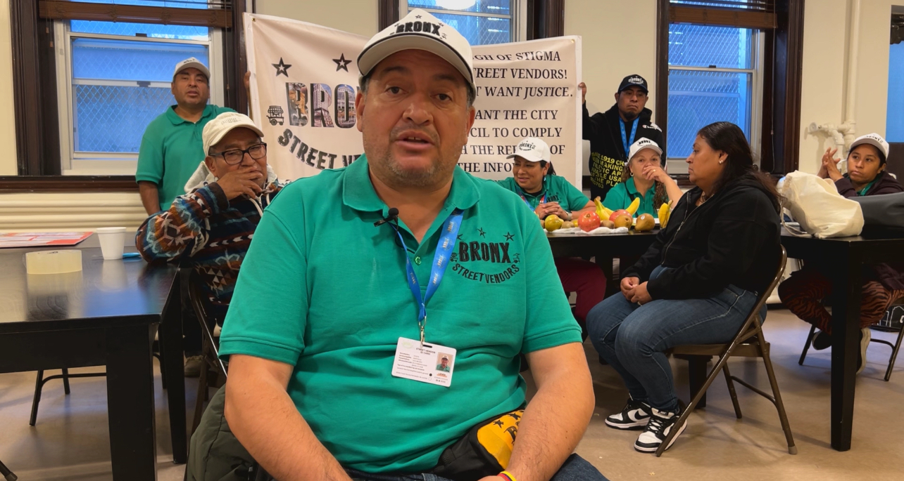

Tickets and summons against street vendors in New York City have increased by 71.5% since Mayor Eric Adams took office in January 2022. An analysis of OATHs' (Office of Administrative Trials and Hearings) public databaseindicates that 16,796 fines and summons were issued until October 2024.
Vicente Veintimilla, leader of the Bronx Street Vendors organization, explained that they have been fined more in the last year than in previous years. He indicated that the majority of fines were for lack of general sales licenses and permits to sell food. "They required us to have permits and licenses", he said. "Permits and licenses that they are not giving. Since 1979, when they established that they will give 853 general vendor licenses and today there are more than 20,000 street vendors."
His explanation is consistent with the findings of the analyzed database, since the largest number of fines and summons imposed were for lack of general sales licenses and permits to sell food. Of the total fines imposed between January and October 2024, 33% were for lack of general vendor licenses. A study by the Independent Budget Office found that since 2016 the waiting list to obtain one is closed.